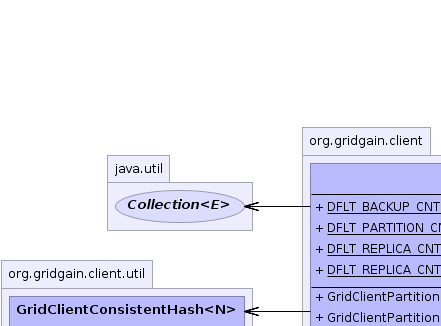
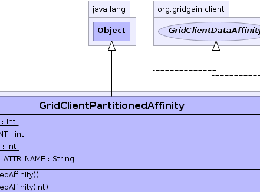
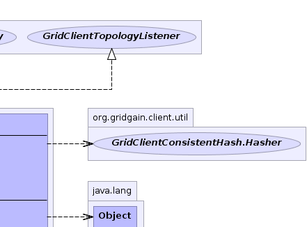
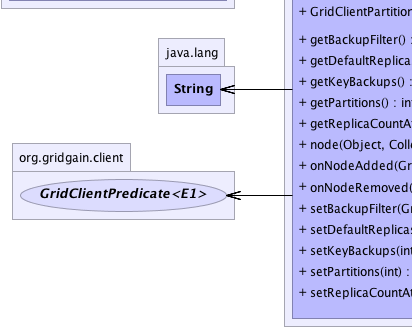
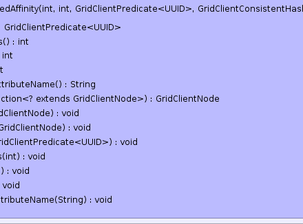
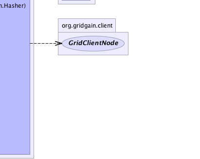

org.gridgain.client.GridClientPartitionedAffinity
org.gridgain.client.GridClientPartitionedAffinity
|
GridGain™ 4.0.3
Java Client |
|||||||||
| PREV CLASS NEXT CLASS | FRAMES NO FRAMES | |||||||||
| SUMMARY: NESTED | FIELD | CONSTR | METHOD | DETAIL: FIELD | CONSTR | METHOD | |||||||||
java.lang.Object
public class GridClientPartitionedAffinity
Affinity function for partitioned cache. This function supports the following configuration:
backups - Use ths flag to control how many back up nodes will be
assigned to every key. The default value is defined by GridClientPartitionedAffinity.DFLT_BACKUP_CNT.
replicas - Generally the more replicas a node gets, the more key assignments
it will receive. You can configure different number of replicas for a node by
setting user attribute with name GridClientPartitionedAffinity.getReplicaCountAttributeName() to some
number. Default value is 512 defined by GridClientPartitionedAffinity.DFLT_REPLICA_CNT constant.
backupFilter - Optional filter for back up nodes. If provided, then only
nodes that pass this filter will be selected as backup nodes and only nodes that
don't pass this filter will be selected as primary nodes. If not provided, then
primary and backup nodes will be selected out of all nodes available for this cache.
NOTE: In situations where there are no primary nodes at all, i.e. no nodes for which backup
filter returns false, first backup node for the key will be considered primary.
| Wiki | |
| Forum |
|  |  |  |
|  |  |  |
| Field Summary | |
|---|---|
static int |
DFLT_BACKUP_CNT
Default number of backups. |
static int |
DFLT_PARTITION_CNT
Default number of partitions. |
static int |
DFLT_REPLICA_CNT
Default replica count for partitioned caches. |
static String |
DFLT_REPLICA_CNT_ATTR_NAME
Name of node attribute to specify number of replicas for a node. |
| Constructor Summary | |
|---|---|
GridClientPartitionedAffinity()
Empty constructor with all defaults. |
|
GridClientPartitionedAffinity(int backups)
Initializes affinity with specified number of backups. |
|
GridClientPartitionedAffinity(int backups,
int parts,
GridClientPredicate<UUID> backupFilter,
org.gridgain.client.util.GridClientConsistentHash.Hasher hasher)
Initializes optional counts for replicas and backups. |
|
| Method Summary | |
|---|---|
GridClientPredicate<UUID> |
getBackupFilter()
Gets optional backup filter. |
int |
getDefaultReplicas()
Gets default count of virtual replicas in consistent hash ring. |
int |
getKeyBackups()
Gets count of key backups for redundancy. |
int |
getPartitions()
Gets total number of key partitions. |
String |
getReplicaCountAttributeName()
Gets optional attribute name for replica count. |
GridClientNode |
node(Object key,
Collection<? extends GridClientNode> nodes)
Gets affinity nodes for a key. |
void |
onNodeAdded(GridClientNode node)
Callback for new nodes joining the remote grid. |
void |
onNodeRemoved(GridClientNode node)
Callback for nodes leaving the remote grid. |
void |
setBackupFilter(GridClientPredicate<UUID> backupFilter)
Sets optional backup filter. |
void |
setDefaultReplicas(int replicas)
Sets default count of virtual replicas in consistent hash ring. |
void |
setKeyBackups(int backups)
Sets count of key backups for redundancy. |
void |
setPartitions(int parts)
Sets total number of partitions. |
void |
setReplicaCountAttributeName(String attrName)
Sets optional attribute name for replica count. |
| Methods inherited from class java.lang.Object |
|---|
clone, equals, finalize, getClass, hashCode, notify, notifyAll, toString, wait, wait, wait |
| Field Detail |
|---|
public static final int DFLT_PARTITION_CNT
public static final int DFLT_BACKUP_CNT
public static final int DFLT_REPLICA_CNT
public static final String DFLT_REPLICA_CNT_ATTR_NAME
gg:affinity:node:replicas.
| Constructor Detail |
|---|
public GridClientPartitionedAffinity()
public GridClientPartitionedAffinity(int backups)
backups - Number of back up servers per key.
public GridClientPartitionedAffinity(int backups,
int parts,
GridClientPredicate<UUID> backupFilter,
org.gridgain.client.util.GridClientConsistentHash.Hasher hasher)
Note that excludeNeighbors parameter is ignored if backupFilter is set.
backups - Backups count.parts - Total number of partitions.backupFilter - Optional back up filter for nodes. If provided, then primary nodes
will be selected from all nodes outside of this filter, and backups will be selected
from all nodes inside it.hasher - Hasher that will be used to calculate key hashes.| Method Detail |
|---|
public int getDefaultReplicas()
To determine node replicas, node attribute with GridClientPartitionedAffinity.getReplicaCountAttributeName()
name will be checked first. If it is absent, then this value will be used.
public void setDefaultReplicas(int replicas)
To determine node replicas, node attribute with GridClientPartitionedAffinity.getReplicaCountAttributeName() name
will be checked first. If it is absent, then this value will be used.
replicas - Count of virtual replicas in consistent hash ring.spublic int getKeyBackups()
public void setKeyBackups(int backups)
backups - Key backup count.public int getPartitions()
Note that for fully replicated caches this method should always
return 1.
public void setPartitions(int parts)
parts - Total number of partitions.public GridClientPredicate<UUID> getBackupFilter()
null, then primary nodes will be
selected from all nodes outside of this filter, and backups will be selected
from all nodes inside it.
Note that excludeNeighbors parameter is ignored if backupFilter is set.
public void setBackupFilter(GridClientPredicate<UUID> backupFilter)
Note that excludeNeighbors parameter is ignored if backupFilter is set.
backupFilter - Optional backup filter.public String getReplicaCountAttributeName()
GridClientPartitionedAffinity.DFLT_REPLICA_CNT_ATTR_NAME.
public void setReplicaCountAttributeName(String attrName)
GridClientPartitionedAffinity.DFLT_REPLICA_CNT_ATTR_NAME.
attrName - User attribute name for replica count for a node.
public GridClientNode node(Object key,
Collection<? extends GridClientNode> nodes)
node in interface GridClientDataAffinitykey - Key to get affinity for.nodes - Nodes to choose from.
public void onNodeAdded(GridClientNode node)
onNodeAdded in interface GridClientTopologyListenernode - New remote node.public void onNodeRemoved(GridClientNode node)
onNodeRemoved in interface GridClientTopologyListenernode - Left node.
|
GridGain™ 4.0.3
Java Client |
|||||||||
| PREV CLASS NEXT CLASS | FRAMES NO FRAMES | |||||||||
| SUMMARY: NESTED | FIELD | CONSTR | METHOD | DETAIL: FIELD | CONSTR | METHOD | |||||||||
|
GridGain - Real Time Big Data
|
|
|